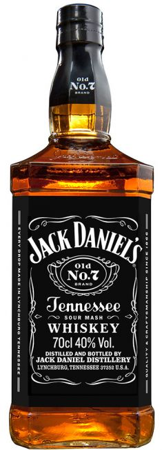
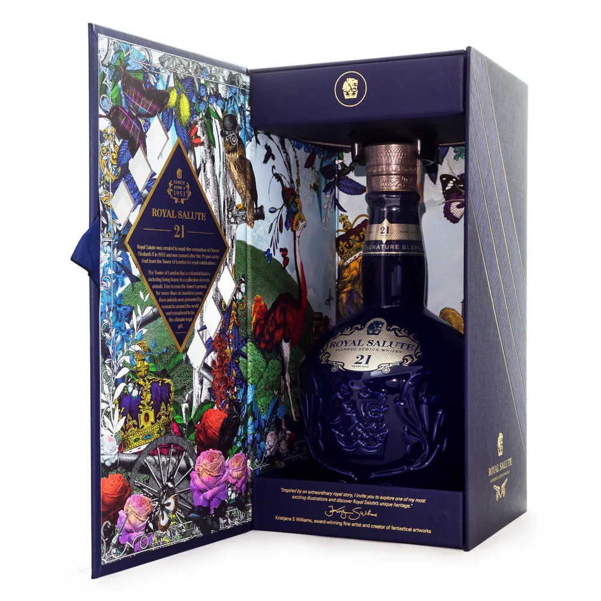

Whisk Jack Daniels 1000ml

Descrição:
Os whiskys da família Jack Daniel`s diferenciam-se pelo cuidadoso processo de elaboração.
O envelhecimento em Barris de Carvalho novos, aliado ao clima muito especial do Tennessee, lhe confere um sabor suave
e marcante. Permanecendo fiel a esta receita, as pessoas podem desfrutar do mesmo whisk que ganhou sete medalhas de ouro internacionais,
quando em 1904 foi homenageado como sendo "o melhor whisk do mundo".
🛒 Adicionar ao carrinho
Royal Salute 21 1000ml

Descrição:
Chivas Royal Salute foi lançado no dia 2 de Junho de 1953, como um tributo para a Rainha Elizabeth II no seu dia de Coroação. O nome deste
Uísque Escocês excepcional vem do nome da Arma de Saudação Real, que é disparada em sinal de respeito para dignitários
poderosos.
Seu nome "Royal Salute", significa "Saúde Real".
Este uísque rico e complexo representa o casamento perfeito de uísques de malte, cada um dos quais foi envelhecido individualmente em barris de carvalho durante 21 anos.
Royal Salute é apresentado em garrafas de porcelanas feitas à mão nas cores Vermelho Grená, Verde ou Azul que são verdadeiras peças de coleção. Sabor único e
encorpado, é recomendado para pessoas que apreciam este tipo de bebida.
🛒 Adicionar ao carrinho